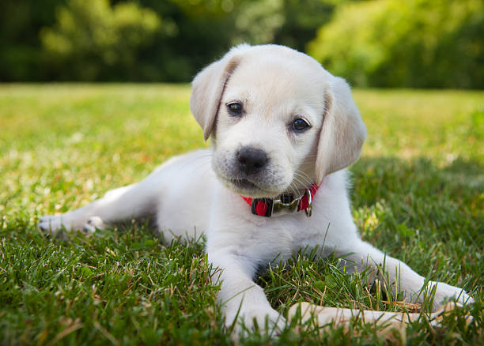
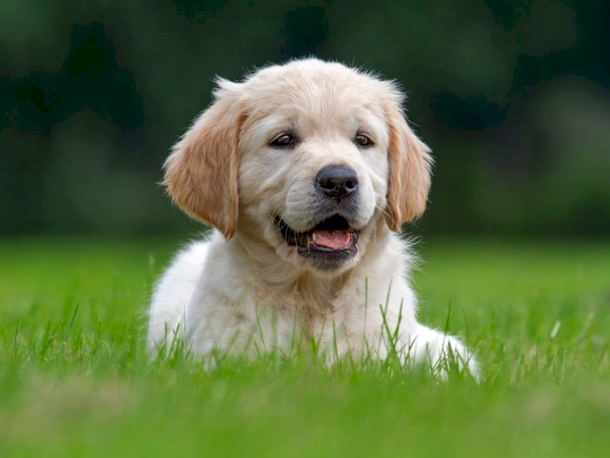
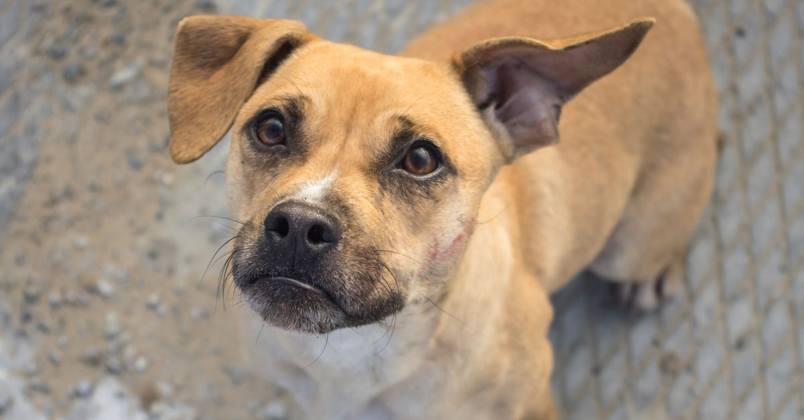
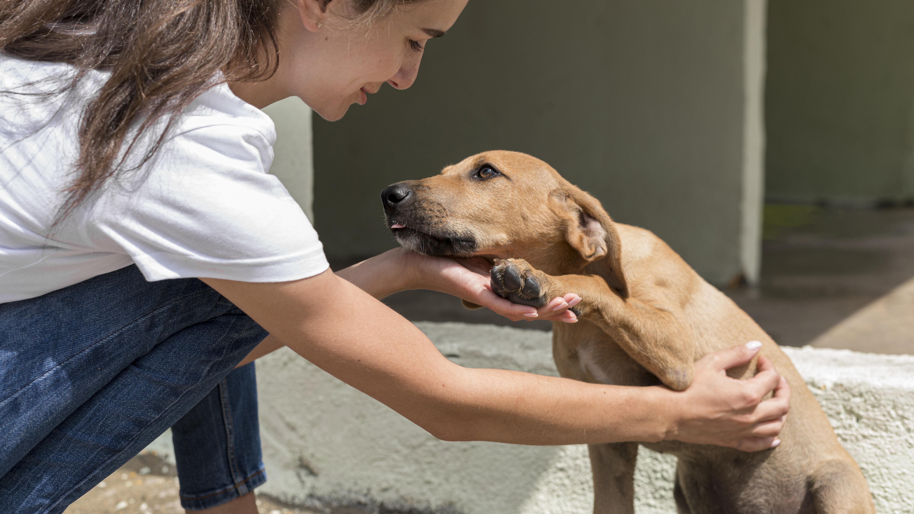
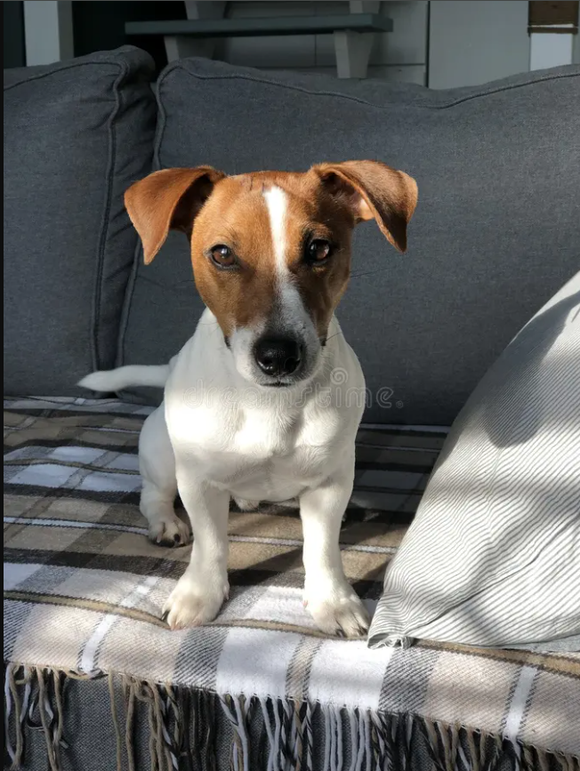
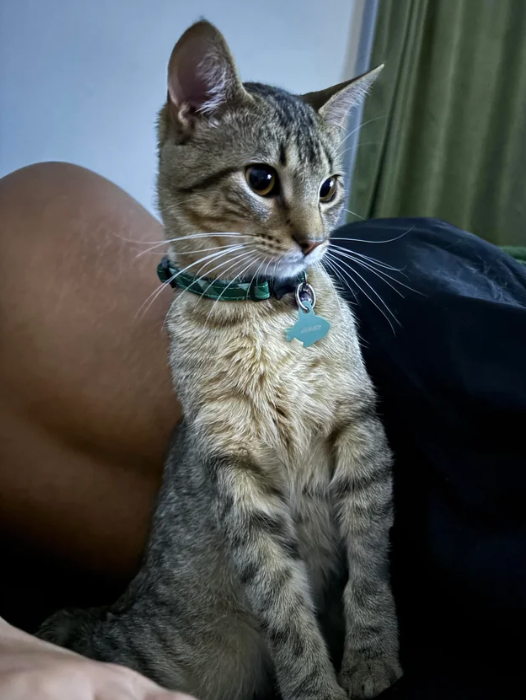
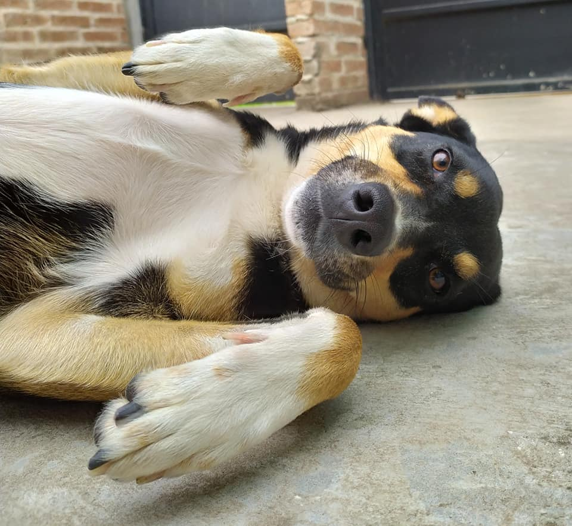
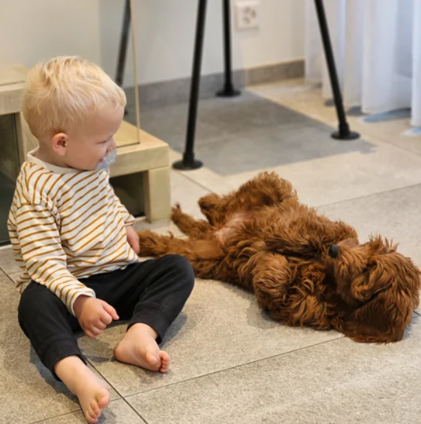
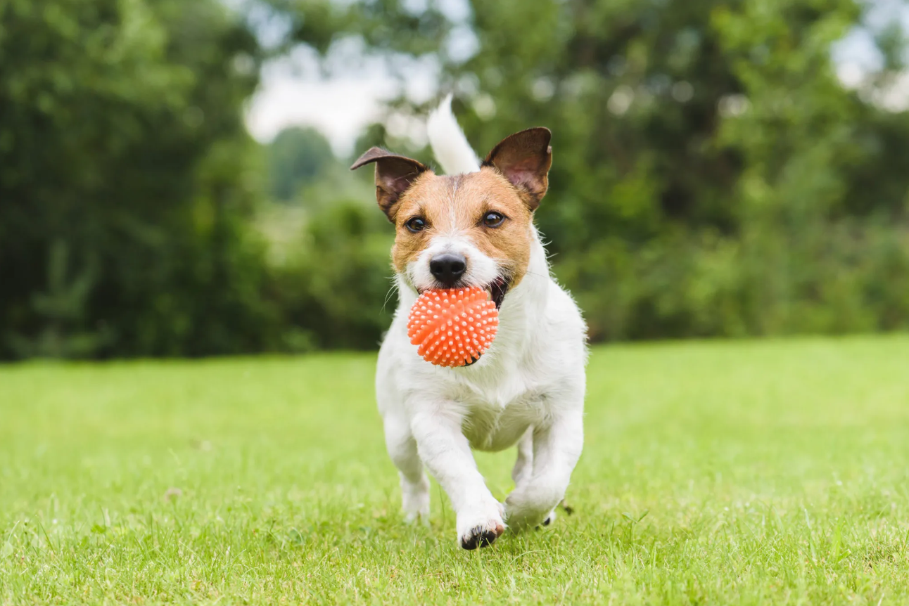
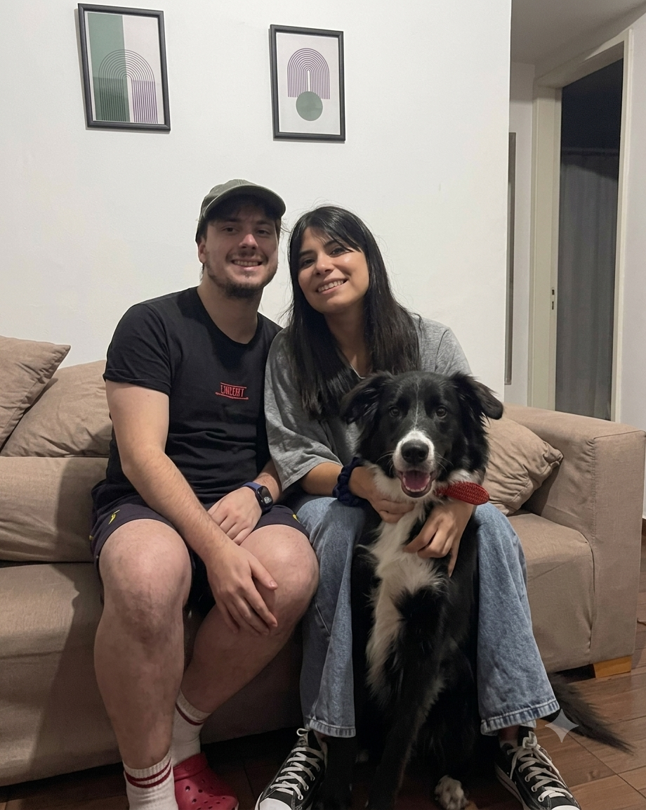

Timba encontró un hogar
Luego de varios meses de recuperación, Timba fue adoptada por una familia que hoy le brinda todo el amor que merece.
Leer historiaRescatamos, rehabilitamos y buscamos un hogar lleno de amor para perros y gatos que lo necesitan. Con tu ayuda podemos seguir transformando historias.
Animales rescatados
Adopciones realizadas
Voluntarios

Hay muchas formas de colaborar con La Banda de Sarita y mejorar la vida de cientos de animales.



Cada uno de ellos espera una segunda oportunidad.



Gracias al apoyo de voluntarios, padrinos y familias adoptantes, seguimos cambiando la vida de cientos de animales cada año.
Animales rescatados
Adopciones exitosas
Voluntarios activos
Años ayudando animales
Cada adopción representa una nueva oportunidad para un animal y una nueva historia para una familia.

Luego de varios meses de recuperación, Timba fue adoptada por una familia que hoy le brinda todo el amor que merece.
Leer historia
Simón llegó con mucho miedo al refugio. Hoy disfruta de una vida llena de juegos y cariño.
Leer historia
Gracias al trabajo del refugio y al compromiso de su familia adoptiva, Samanta recuperó la confianza.
Leer historiaCon una donación, una adopción o unas horas de voluntariado podés cambiar la vida de un animal.